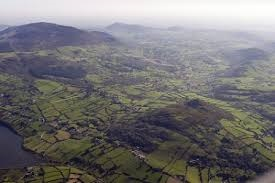

History
The history of the Ring of Gullion begins about 450 million years ago when the Newry granite was emplaced. It extends from the valley in the Ring of Gullion to Ballynahinch in the middle of County Down. Some 390 million years later, the giant landmass Pangaea (which included the Americas, Eurasia and Africa) began to split up. A big gash cracked this landmass, stretching from east of northern Greenland and Norway down to Tierra del Fuego and Cape Town. Billions of litres of lava flowed out. Some formed the Giant's Causeway: giant lavafields that flowed like water. Other eruptions were more explosive, such as Slemish in County Antrim, or The Cooley Mountains, or Slieve Gullion, or the Ring of Gullion.
Near Forkill are the remains of a pyroclastic explosion, when lava bombs rain down. Would you fancy being hit by a 300 degree boulder? I thought not.
The main mountain, Slieve Gullion (the mountain of Cualann the blacksmith), was erupted after the Ring. The centre of the mountain was a huge vent, spewing lava both upwards and sideways into the surrounding rock, where it cooled to form the Ring of Gullion. The cooled lava in the vent is the most resistant of all of the rocks, causing Slieve Gullion to be the highest mountain in this area. It is the highest mountain in County Armagh. You can see about 15 counties from the top, from Antrim over to Fermanagh and down to Wicklow. The top is saucer-like: there are two peaks, separated by a lake, which has plenty of mythology associated with it.
The Ring itself is like a circle, with the centre at Slieve Gullion, and a radius of 5 miles. There is a forest on Gullion's eastern slopes, which has a nice coffee shop and playground, plus marked walking circuits. There is also a long road around the southern and western slopes of Gullion, which allows climbing access from the west, at a car park, more than halfway up the slope. The walk itself is easy, plenty of paving.
The southern summit (the higher of the two) has a cairn. It is the highest monument in the UK (might also be the highest in Ireland, I'm not sure). There is a chamber inside the cairn which you can go into, very atmospheric. Highly recommended. Years ago, during the Troubles, the cacophonous drone of helicopters taking off from and landing at Bessbrook Army Base was a real buzzkill. Many of the mountains in the Ring had Army bases on top, thankfully gone now. Some foundations of the Army base on Camlough Mountain can still be seen.
Come and see for yourself!
— Cú ChulainnMain Peaks
- Slieve Gullion: 573m.
- Clermont (Black Mountain): 508m.
- Camlough Mountain: 423m.
- Croslieve: 308m.
- Burrin: 294m.
- Sugarloaf Hill (Sturgan Mountain): 265m.
- Tievecrom: 263m.
- Fathom Mountain: 247m.
- Mullaghbane Mountain: 242m.
Interesting Locations
- Cam Lough.
- Ballymacdermott Court Tomb.
- Camlough Mountain summit.
- The Crooked Road, Lislea.
- Ballykeel Dolmen.
- Cashel Lough Upper picnic site.
- Walking up the Glendesha Road from Dungooly.